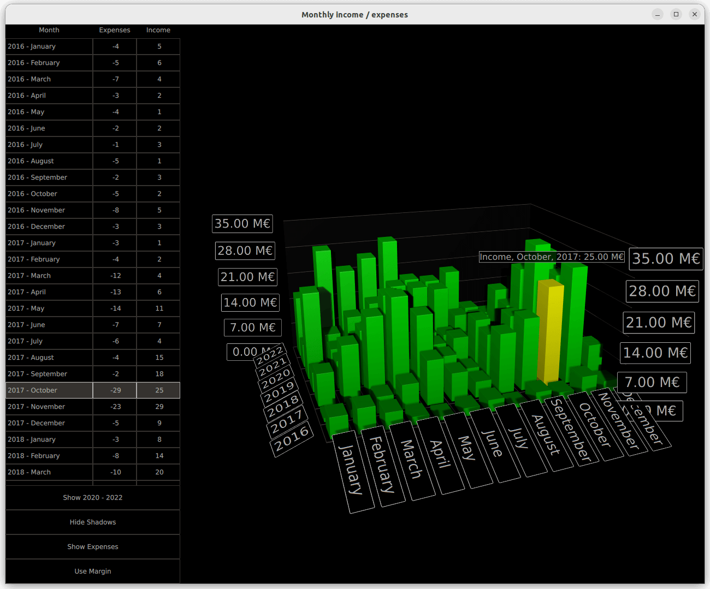

Simple Bar Graph
Using Bars3D in a QML application.
Simple Bar Graph shows how to make a simple 3D bar graph using Bars3D and QML.

The following sections describe how to switch series and display more than one series at a time. For more information about basic QML application functionality, see Simple Scatter Graph.
Running the Example
To run the example from Qt Creator, open the Welcome mode and select the example from Examples. For more information, visit Building and Running an Example.
Data
The example data set is the monthly income and expenses of a fictional company over several years. The data is defined in a list model in Data.qml like this:
ListModel { id: dataModel ListElement{ timestamp: "2016-01"; expenses: "-4"; income: "5" } ListElement{ timestamp: "2016-02"; expenses: "-5"; income: "6" } ListElement{ timestamp: "2016-03"; expenses: "-7"; income: "4" } ...
Each data item has three roles: timestamp, income, and expenses. The timestamp value is in format: <four digit year>-<two digit month>. Usually, you would map years and months to rows and columns of a bar chart, but you can only show either income or expenses as the value.
Now, add the data to the Bars3D graph. Create two Bar3DSeries inside it, starting with a series for the income:
Bar3DSeries { id: barSeries itemLabelFormat: "Income, @colLabel, @rowLabel: @valueLabel" baseGradient: barGradient ItemModelBarDataProxy { id: modelProxy itemModel: graphData.model rowRole: "timestamp" columnRole: "timestamp" valueRole: "income" rowRolePattern: /^(\d\d\d\d).*$/ columnRolePattern: /^.*-(\d\d)$/ rowRoleReplace: "\\1" columnRoleReplace: "\\1" multiMatchBehavior: ItemModelBarDataProxy.MMBCumulative } ...
The data is attached to the itemModel property of the ItemModelBarDataProxy inside the series. For valueRole, specify the income field, as it contains the value you want. Getting the years and months is a bit more complicated, since they are both found in the same field. To extract those values, specify the timestamp field for both rowRole and columnRole, and additionally specify a search pattern and a replace rule for those roles to extract the correct portion of the field contents for each role. The search pattern is a normal JavaScript regular expression and the replace rule specifies what the field content that matches the regular expression is replaced with. In this case, replace the entire field content with just the year or the month, which is the first captured substring for both rows and columns. For more information about the replace functionality with regular expression, see QString::replace(const QRegExp &rx, const QString &after) function documentation.
The multiMatchBehavior property specifies what to do in case multiple item model items match the same row/column combination. In this case, add their values together. This property has no effect when showing values for each month, as there are no duplicate months in our item model, but it becomes relevant later when you want to show the yearly totals.
Then, add another series for the expenses:
Bar3DSeries { id: secondarySeries visible: false itemLabelFormat: "Expenses, @colLabel, @rowLabel: -@valueLabel" baseGradient: secondaryGradient ItemModelBarDataProxy { id: secondaryProxy itemModel: graphData.model rowRole: "timestamp" columnRole: "timestamp" valueRole: "expenses" rowRolePattern: /^(\d\d\d\d).*$/ columnRolePattern: /^.*-(\d\d)$/ valueRolePattern: /-/ rowRoleReplace: "\\1" columnRoleReplace: "\\1" multiMatchBehavior: ItemModelBarDataProxy.MMBCumulative } ...
The model contains expenses as negative values, but you want to show them as positive bars, so that they can be easily compared to income bars. Use the valueRolePattern to remove the minus sign to achieve this. No replacement string needs to be specified as the default replacement is an empty string.
Use the visible property of the series to hide the second series for now.
Custom Axis Labels
Axes.qml redefines the category labels for the column axis because the data contains numbers for months, which would clutter the labels:
CategoryAxis3D { id: columnAxis labels: ["January", "February", "March", "April", "May", "June", "July", "August", "September", "October", "November", "December"] labelAutoRotation: 30 }
To make axis labels more readable at low camera angles, set automatic axis label rotation.
Switching Series
In main.qml, set up the graph and various UI elements. There are three interesting code blocks to highlight here. The first one shows how to change the visualized data between income, expenses, and both, by simply changing the visibility of the two series:
onClicked: { if (text === "Show Expenses") { barSeries.visible = false; secondarySeries.visible = true; barGraph.valueAxis.labelFormat = "-%.2f M\u20AC"; secondarySeries.itemLabelFormat = "Expenses, @colLabel, @rowLabel: @valueLabel"; text = "Show Both"; } else if (text === "Show Both") { barSeries.visible = true; barGraph.valueAxis.labelFormat = "%.2f M\u20AC"; secondarySeries.itemLabelFormat = "Expenses, @colLabel, @rowLabel: -@valueLabel"; text = "Show Income"; } else { // text === "Show Income" secondarySeries.visible = false; text = "Show Expenses"; } }
The axis label format and item selection label formats are tweaked to get the negative sign showing properly for expenses, which were actually resolved as positive values.
The second interesting block is where the visualized data is changed by adjusting the proxy properties:
onClicked: { if (text === "Show yearly totals") { modelProxy.autoRowCategories = true; secondaryProxy.autoRowCategories = true; modelProxy.columnRolePattern = /^.*$/; secondaryProxy.columnRolePattern = /^.*$/; graphAxes.value.autoAdjustRange = true; barGraph.columnAxis = graphAxes.total; text = "Show all years"; } else if (text === "Show all years") { modelProxy.autoRowCategories = true; secondaryProxy.autoRowCategories = true; modelProxy.columnRolePattern = /^.*-(\d\d)$/; secondaryProxy.columnRolePattern = /^.*-(\d\d)$/; graphAxes.value.min = 0; graphAxes.value.max = 35; barGraph.columnAxis = graphAxes.column; text = "Show 2020 - 2022"; } else { // text === "Show 2020 - 2022" // Explicitly defining row categories, since we do not want to show data for // all years in the model, just for the selected ones. modelProxy.autoRowCategories = false; secondaryProxy.autoRowCategories = false; modelProxy.rowCategories = ["2020", "2021", "2022"]; secondaryProxy.rowCategories = ["2020", "2021", "2022"]; text = "Show yearly totals"; } }
To show the yearly totals, combine the twelve months of each year into a single bar. This is achieved by specifying a columnRolePattern that matches all model items. That way, the data proxy will only have a single column. The cumulative multiMatchBehavior specified earlier for the proxy becomes relevant now, causing the values of all twelve months of each year to be added up into a single bar.
To show just a subset of years, set autoRowCategories to false on the ItemModelBarDataProxy item and define the row categories explicitly. This way, only the items in the specified row categories are visualized.
The third interesting block shows how to get the row and column index of an item if you know the row and column values by using ItemModelBarDataProxy methods rowCategoryIndex() and columnCategoryIndex():
onCurrentRowChanged: { var timestamp = graphData.model.get(mainview.currentRow).timestamp; var pattern = /(\d\d\d\d)-(\d\d)/; var matches = pattern.exec(timestamp); var rowIndex = modelProxy.rowCategoryIndex(matches[1]); var colIndex; if (barGraph.columnAxis == graphAxes.total) colIndex = 0 ;// Just one column when showing yearly totals else colIndex = modelProxy.columnCategoryIndex(matches[2]); if (selectedSeries.visible) mainview.selectedSeries.selectedBar = Qt.point(rowIndex, colIndex); else if (barSeries.visible) barSeries.selectedBar = Qt.point(rowIndex, colIndex); else secondarySeries.selectedBar = Qt.point(rowIndex, colIndex); }
Files: